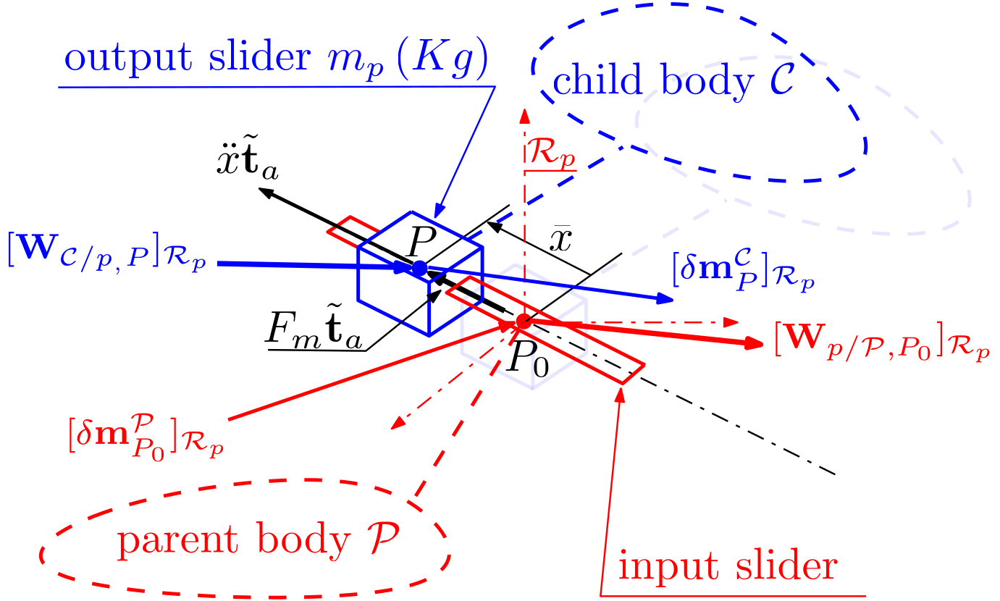
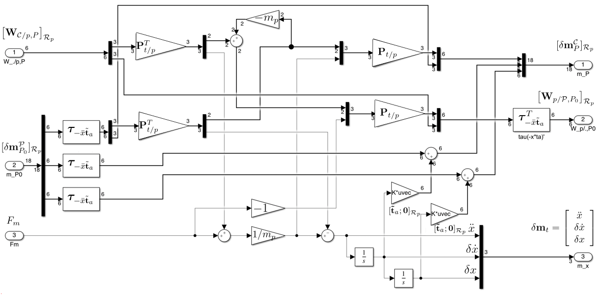
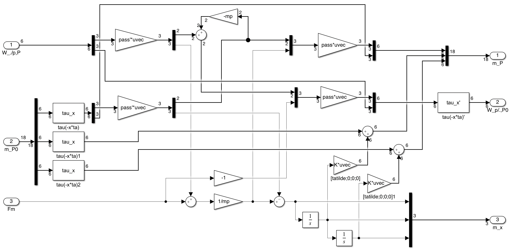

Prismatic joint with linear offset (configuration)
Linear augmented TITOP model of a prismatic joint around a given linear configuration.
This block implements the augmented $27 \times 25$ TITOP (Two-Input Two-Output Ports) model of a prismatic joint located at the interconnection $P_0$ between a parent body $\mathcal P$ and a child body $\mathcal C$ for a given linear configuration $\bar x$ (offset). The inputs and the outputs of this model are:
- the $18 \times 6 $ transfer from the wrench applied by the child body $\mathcal C$ at the point $P$ on the translated output slider of the prismatic joint to the motion vector of the body $\mathcal C$ at the point $P$, projected in the parent body frame $\mathcal R_p$,
- the $6 \times 18 $ transfer from the motion vector imposed by the parent body $\mathcal P$ at the connection point $P_0$ of the input slider of the prismatic joint to the wrench applied by this input slider to the parent body $\mathcal P$ at the point $P_0$, projected in the parent body frame $\mathcal R_p$,
- the $3 \times 1 $ transfer from the force applied to the output slider by the input slider (thanks to an actuator) to the relative motion vector variation $\delta\mathbf m_t=\left[\ddot x,\;\;\delta\dot x,\;\;\delta x\right]^T$,
Remarks:
- This block includes 2 integrators to model the rigid mode of the prismatic joint. The initial conditions on these 2 integrators are null since only the linear model and small variations around $\bar x$ are considered. That justifies the notation $\delta\dot x$ and $\delta x$ for the successive integration of the accelarations $\ddot x$ (assumed to be small also).
See also: General notations, Revolute joint + configuration, Revolute joint , 1-port flexible body, Multi port rigid body
Contents
Description
Considering a primatic joint (see following Figure) between a parent body, clamped on the input slider of the prismatic joint at the point $P_0$, and the child body $\mathcal C$, clamped on the output slider of the prismatic joint at the point $P$. $P$ and $P_0$ coincide when the linear configuration (offset) of the prismatic joint is null.

Let us define:
- $\mathcal{R}_p$: the frame attached to the input slider or the parent body at the point $P_0$,
- $\mathbf{t}_a$: the direction of the prismatic joint axis and $\mathbf{\tilde{t}}_a$ a unitary vector along this direction,
- $\bar x$: the linear configuration of the prismatic joint: $P$ coincides with $P_0$ when $\bar x=0$,
- $\ddot x$, $\delta\dot x$, $\delta x$ the relative linear acceleration, velocity and position variations of the output slider w.r.t. to the input slider around $\bar x$
- $F_m$: the force which can be applied inside the prismatic joint by the input slider to the output slider,
- $m_p$: the mass of the output slider,
- $\mathbf{W}_{\mathcal C/p,P}=\left[\mathbf{F}^T_{\mathcal C/p} \;\;\mathbf{T}^T_{\mathcal C/p,P}\right]^T$: the external wrench ($6\times 1$) applied by the child body $\mathcal C$ on the output slider, at point $P$,
- $\delta\mathbf{m}^{\mathcal C}_{P}$ the motion vector ($18\times 1$) of the child body $\mathcal C$ at the point $P$. $\delta\mathbf m^\mathcal{C}_P=\left[{\boldsymbol{\mathbf{x}''}^\mathcal{C}_P}^T\;\;{\delta\boldsymbol{\mathbf x'}^\mathcal{C}_P}^T\;\;{\delta\mathbf{x}^\mathcal{C}_P}^T\right]^T$ with $\boldsymbol{\mathbf{x}''}^\mathcal{C}_P= \left[ {\mathbf{a}^{\mathcal C}_P}^T \;\; {\boldsymbol{\dot\omega}^{\mathcal C}}^T \right]^T$,
- $\delta\mathbf{m}^{\mathcal P}_{P_0}$ the motion vector ($18\times 1$) of the parent body $\mathcal P$ at the point $P_0$. $\delta\mathbf m^\mathcal{P}_{P_0}=\left[{\boldsymbol{\mathbf{x}''}^\mathcal{P}_{P_0}}^T\;\;{\delta\boldsymbol{\mathbf x'}^\mathcal{P}_{P_0}}^T\;\;{\delta\mathbf{x}^\mathcal{P}_{P_0}}^T\right]^T$ with $\boldsymbol{\mathbf{x}''}^\mathcal{P}_{P_0}= \left[ {\mathbf{a}^{\mathcal P}_{P_0}}^T \;\; {\boldsymbol{\dot\omega}^{\mathcal P}}^T \right]^T$,
- $\mathbf{W}_{p/\mathcal P,P_0}=\left[\mathbf{F}^T_{p/\mathcal P_0} \;\;\mathbf{T}^T_{p/\mathcal P,P_0}\right]^T$: the wrench ($6\times 1$) applied by input shaft on the parent body $\mathcal P$, at point $P_0$,
Then, the dynamic model projected along the prismatic joint axis $\mathbf t_a$ reads:
$$\mathbf{\tilde{t}}_{a6}.\mathbf{W}_{C/p,P}+F_m=m_p\underbrace{\left(\ddot{x}+\mathbf{\tilde{t}}_{a6}.(\boldsymbol\tau_{PP_0}\boldsymbol{\mathbf{x}''}^\mathcal{P}_{P_0})\right)}_{\boldsymbol{\mathbf{x}''}^\mathcal{C}_{P}} $$
where:
- $\mathbf{a}.\mathbf{b}=\left[\mathbf{a}\right]^T_{\mathcal{R}_p}\left[\mathbf{b}\right]_{\mathcal{R}_p}$ stands for the scalar product of dual vectors $\mathbf{a}$ and $\mathbf{b}$,
- $\left[\mathbf{\tilde{t}}_{a6}\right]_{\mathcal R_p}=\left[[\mathbf{\tilde{t}}_{a}]^T_{\mathcal R_p}\;\;0\;\;0\;\;0\right]^T$,
- $\boldsymbol\tau_{PP_0}=\boldsymbol\tau_{-\bar x\mathbf{\tilde{t}}_{a}}$ is the kinematic model between points $P$ and $P_0$.
The force applied by the joint $p$ to the parent body along the prismatic axis is $-F_m$: $ \mathbf{\tilde{t}}_{a6}.\mathbf{W}_{p/\mathcal P,P_0}=-F_m.$
Along any direction $\mathbf v$ orthogonal to $\mathbf t_a$, the force balance reads: $\mathbf v.\left(\mathbf{F}_{\mathcal C/p,P}-\mathbf{F}_{p/\mathcal P,P_0}\right)=m_p\mathbf v. \mathbf{a}^\mathcal C_P$.
Finally: $\mathbf{W}_{p/\mathcal P,P_0}=\boldsymbol\tau_{PP_0}^T \mathbf{W}_{p/\mathcal P,P}$.
Considering the DCM matrix mapping the prismatic joint axis on the third axis :
$$\mathbf{P}_{t/p}=\mathbf{P_t}_a\left[\begin{array}{ccc} \mbox{det}(\mathbf{P_{t}}_a) & 0 & 0\\ 0 & 1 & 0 \\ 0 & 0 & 1\end{array}\right]\;\; \mbox{with: } \mathbf{P_t}_a=\left[\mbox{null}([\mathbf{\tilde{t}}_a]^T_{\mathcal{R}_p})\quad [\mathbf{\tilde{t}}_a]_{\mathcal{R}_p}\right],$$ then, the block-diagram of the TITOP model of a prismatic joint can be depicted in the following Figure.

Ports
Inputs:
- W./p,P $=\left[\mathbf{W}_{\mathcal C/p,P}\right]_{\mathcal R_c}$: 6 component signal (units: $N$ and $N.m$),
- m_P0 $=\left[\delta\mathbf{m}^{\mathcal P}_{P_0}\right]_{\mathcal{R}_p}$: 18 component signal (units: $m/s^2$, $rd/s^2$, $m/s$, $rd/s$, $m$, $rd$),
- Fm $=F_m$: scalar signal (unit: $N.m$).
Outputs:
- m_P $=\left[\delta\mathbf{m}^{\mathcal C}_{P}\right]_{\mathcal{R}_c}$: 18 component signal (units: $m/s^2$, $rd/s^2$, $m/s$, $rd/s$, $m$, $rd$),
- Wp/.,P0 $=\left[\mathbf{W}_{p/\mathcal P,P_0}\right]_{\mathcal{R}_p}$: 6 component signal (units: $N$ and $N.m$),
- m_x $=\delta\mathbf m_t=\left[\ddot x,\;\;\delta\dot x,\;\;\delta x\right]^T$: the relative motion vector (unit: $m/s^2$, $m/s$, $m$).
Parameters
The input parameters are:
- the direction of the joint-axis in the local frame (3x1 vector): $\left[\mathbf{t}_a\right]_{\mathcal{R}_p}$,
- the output slider mass (unit: $Kg$): $m_p$
- the linear configuration $\bar x$ (unit: $m$)
Simulink diagram under the mask

with: $\mathrm{pass}=\mathbf{P}_{t/p}$ and $\mathrm{tau\_x}=\boldsymbol\tau_{-\bar x\mathbf{\tilde{t}}_{a}}$.